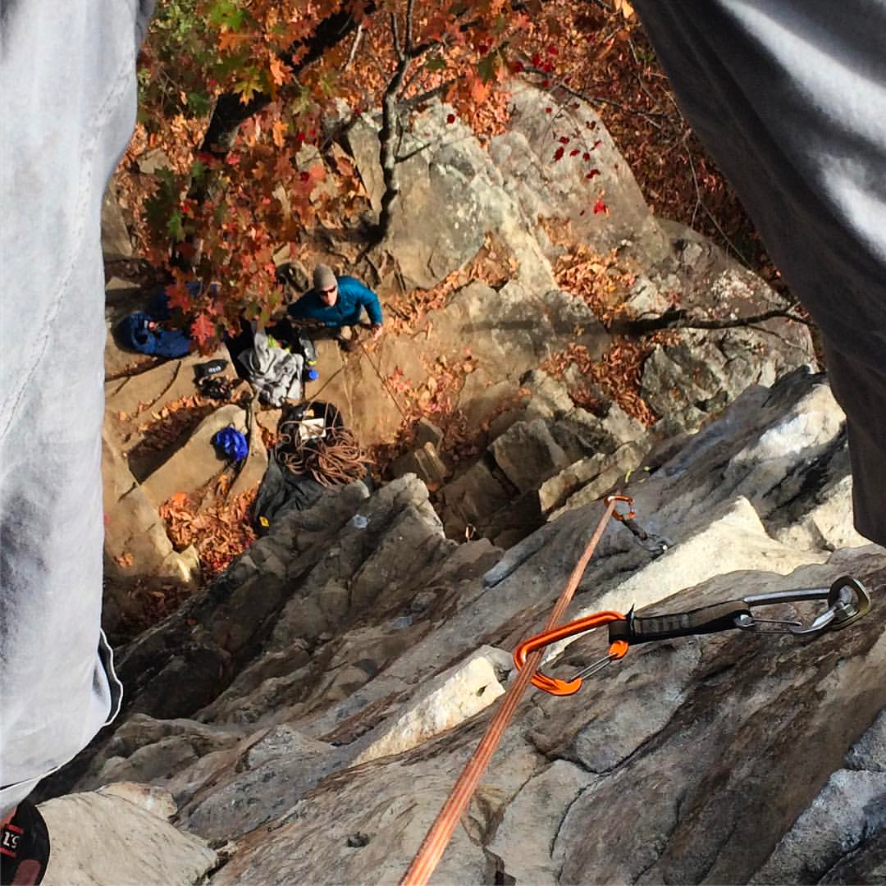

Sport Climbing
- Sport climbing is a popular form of rock climbing that involves ascending predefined routes, known as "sport routes," while using a rope for safety.
- Sport climbers rely on fixed anchors, such as bolts drilled into the rock, for protection along the route.
- Climbers use specialized equipment like quickdraws and harnesses to attach themselves to the rope and safely clip into the bolts.
- Sport climbing offers a wide range of difficulty levels, from beginner-friendly routes to highly challenging overhangs and technical climbs.
- Many climbers are introduced to the climbing and begin as "sport climbers" due to the now growing number of indoor climbing facilities where technique can be developed in a controlle evnvironment.
